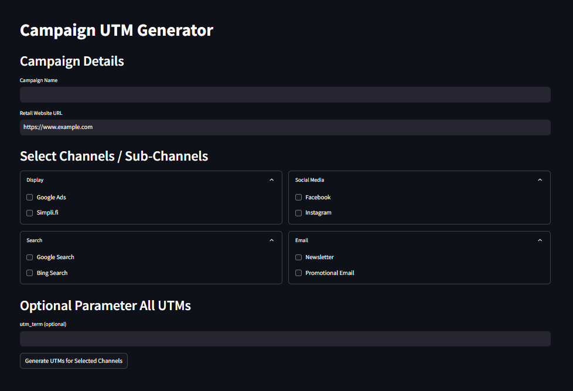
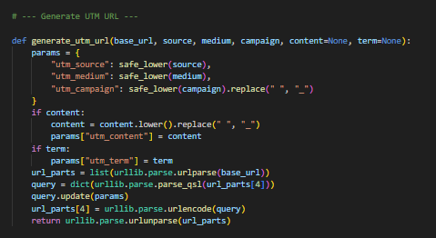
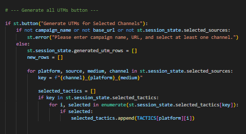
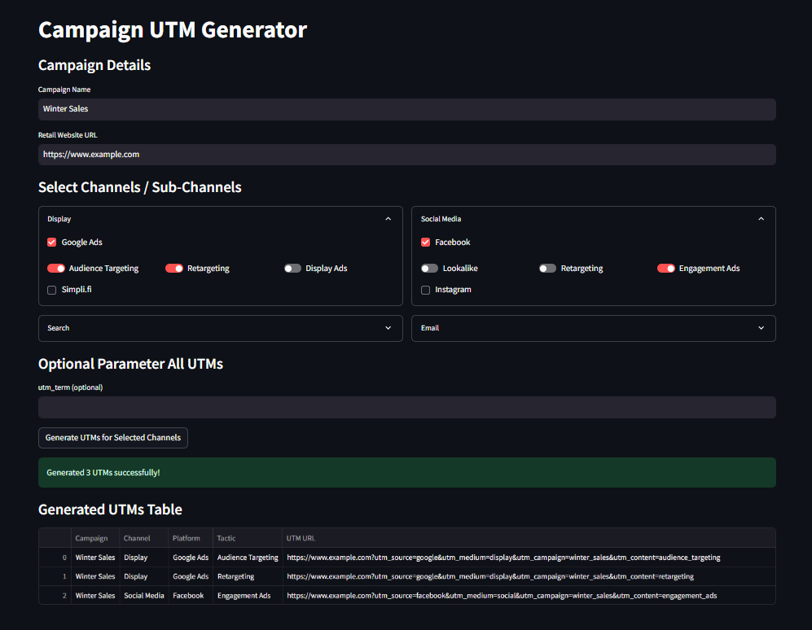

This Python-based application automates the creation of UTM URLs for marketing campaigns. It supports multiple channels, platforms, and tactics, generating clean, structured links ready for tracking across digital campaigns.
The tool ensures consistency in naming conventions, reduces manual errors, and streamlines the process of preparing marketing analytics-ready URLs.

Marketers often spend significant time manually creating UTM URLs for multiple campaigns, platforms, and tactics.
This process was error-prone and inconsistent, causing issues such as:
Overall, manual UTM creation reduced productivity and created unreliable tracking data.
The Campaign UTM Generator automates UTM URL creation using a Python + Streamlit web interface.
Key features include:


The UTM Generator replaced manual spreadsheet workflows with a dynamic, automated web app.
The solution delivered:
The tool enables marketers to quickly generate standardized UTM URLs, improving campaign tracking and ROI measurement.

Note: All metrics presented are based on professional experience and have been anonymised, aggregated, or proportionally adjusted to ensure compliance with confidentiality and data protection standards.

A Python application that classifies clients using large-scale data and custom business logic.
85% faster client data processing

Executive dashboard visualising key metrics, tracking revenue trends, and delivering business insights.
BigQuery • ARIMA • PowerBI

Audit, transform, and enrich CRM data to ensure accuracy, standardise key fields consistently.
100% data-driven decisions enabled